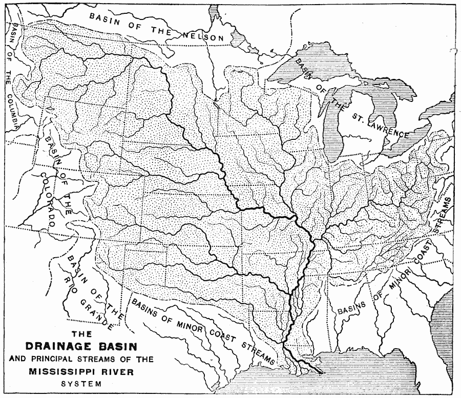
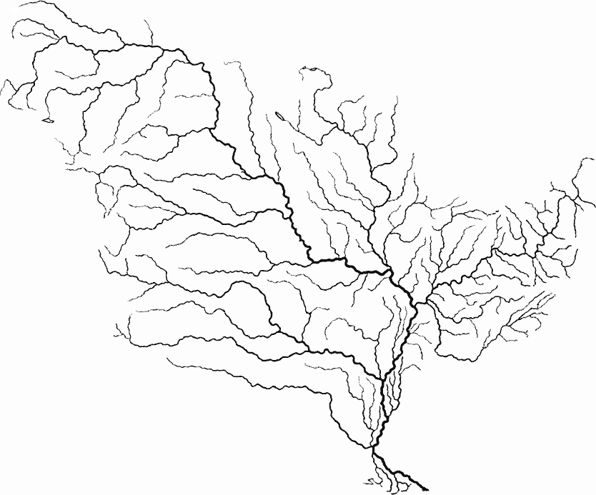

I perform a basic image search to find this map from the University of South Florida's archive titled “Drainage Basin and Principal Streams of the Mississippi River System, 1888.”
Using a GUI image processing program, I remove extraneous information and touch up some gaps in the river courses. Finally, I reduce the image to grayscale and crop it.
Next I convert the raster image to plaintext that I can use easily in PureData. The command line utility ImageMagick is perfect for this purpose.
convert watershed-extracted.gif txt:- > watershed-extracted.txt
The above command prints out each pixel's location and its hexadecimal color value. To clean up the data further, I remove the header row (tail), extraneous columns (cut), and all pixels with the background color (grep). Then I use regular expressions to make the syntax closer to what PureData would like to see (sed).
cat watershed-extracted.txt |\ tail -n +2 |\ grep -v \#F |\ grep -v \#E |\ cut -d ' ' -f 1,4 |\ sed 's/: #/ 0x/' |\ sed 's/,/ /' > pixels-Y.txt
The resulting data looks like this:
55 0 C4C4C4FF 56 0 C4C4C4FF 57 0 C4C4C4FF 48 1 C4C4C4FF 53 1 C4C4C4FF 54 1 101010FF 55 1 101010FF 56 1 757575FF 57 1 101010FF 58 1 101010FF ...
It is sorted first by Y-value (second column) and then by X-value. I can use this to traverse the image from left to right, top to bottom. This would have the effect of going from North to South. For now, I want to go from West to East. To do this, I sort to the pixels by X-value.
sort -n pixels-Y.txt > pixels-X.txt
The result is as expected.
0 127 C4C4C4FF 0 128 757575FF 0 129 757575FF 0 130 757575FF 0 131 757575FF 0 132 757575FF 0 133 C4C4C4FF 1 125 C4C4C4FF 1 126 757575FF 1 127 757575FF ...
First I load the pixel data into a [text define] object named "pixels."
This is the main process of the patch. It moves line-by-line through [text get pixels], formats the data, and sends it to a polyphonic synthesizer.
Inside the [pd traverse] subpatch is a basic [line] object with added processing. This ensures I only [text get] each line number once.
Inside [pd process-data], I [unpack] the line and send each variable to its own subpatch. This allows me to [pack] a list with the data to control [synth-voice~].
Each of the subpatches handles the variables roughly the same way. The range of pixel values (x, y, and rgb) are mapped to different control inputs for the [synth-voice~] subpatch (balance, midi pitch, and volume). Variables defining the range of volumes and pitches are matters of taste. I adjusted the values by ear.
Note above that each subpatch receives a message sent from elsewhere in the patch. I handle this in the subpatch [pd global-variables]. The message [calculate( runs a process to traverse [text get pixels] and track the maximum values for each variable. Since this takes time, the values are made to persist in the patch between performances. That way, I can use [broadcast( to simply send the stored max values.
Each output from [pd process-data] is list of pan, pitch and loudness values corresponding to a pixel's location and color. These lists are appended with an index number (up to 499) so [clone] can route them to the 500 different instances of [synth-voice~].
The [synth-voice~] subpatch generates a sine wave based on the midi pitch input. This sine wave is routed through an an envelope, shaped by creation arguments $2 and $3 for attack and decay. Finally, trigonometric panning is applied using the balance input derived from the X position.
Below is the audio output as the patch scans through the map data in 10 seconds. Each voice has a 15 ms attack and 250 ms decay.
The contours of the watershed system become legible when I read through the file over 100 seconds. Here, I've lengthened the decay time by a factor of 10 to 2500 ms.
To create a visual companion to the sound, I run a linux shell script. This utilizes the powerhouse ImageMagick convert command. I read the pixels-X.txt file line by line. Starting from the original watershed image, I color in the first pixel and save it to a result file. Each subsequent iteration of the while loop uses that previous result, thus progressively coloring in the map. By changing the destination filename based on the X value, I end up with 834 frames, one for each column of the original image.
#!/bin/bash
cp watershed-extracted.gif ./frames/target.gif
cd frames
while read -r line; do
a=($(echo $line))
echo $line
convert target.gif -fill red \
-draw "point ${a[0]},${a[1]}" ${a[0]}.gif
cp ${a[0]}.gif target.gif
done < ../pixels-X.txt
This script is incredibly inefficient, taking almost an hour to loop through the 30,000 pixels in the image. I'm sure there is a more efficient approach. Fortunately, I only need to run this once.
Next I use ffmpeg to convert an image sequence into a video. I made two sequence, each using all 834 images. I selecte the framerate to make a 10 and 100 second video companions for the above audio. First, however, I convert gifs to pngs that ffmpeg can use.
for f in *; do
convert $f ${%.gif}.png
done
ffmpeg -framerate 83.4 %03d.png -vcodec copy 10000ms-video.mp4
ffmpeg -framerate 8.34 %03d.png -vcodec copy 100000ms-video.mp4
It is a simple matter to add the audio from earlier to the new videos.
ffmpeg -i ./frames/10000ms-video.mp4 -i 10000ms.wav 10000ms.mp4
This will look better if the river is filled in with blue. To do this, I add a simple negate filter.
ffmpeg -i ./frames/100000ms-video.mp4 -i 100000ms.wav 100000ms.mp4 ffmpeg -i 100000ms.mp4 -vf negate 100000ms-neg.mp4